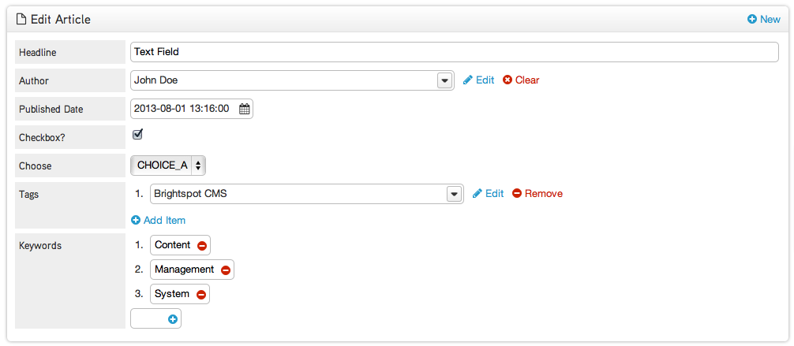
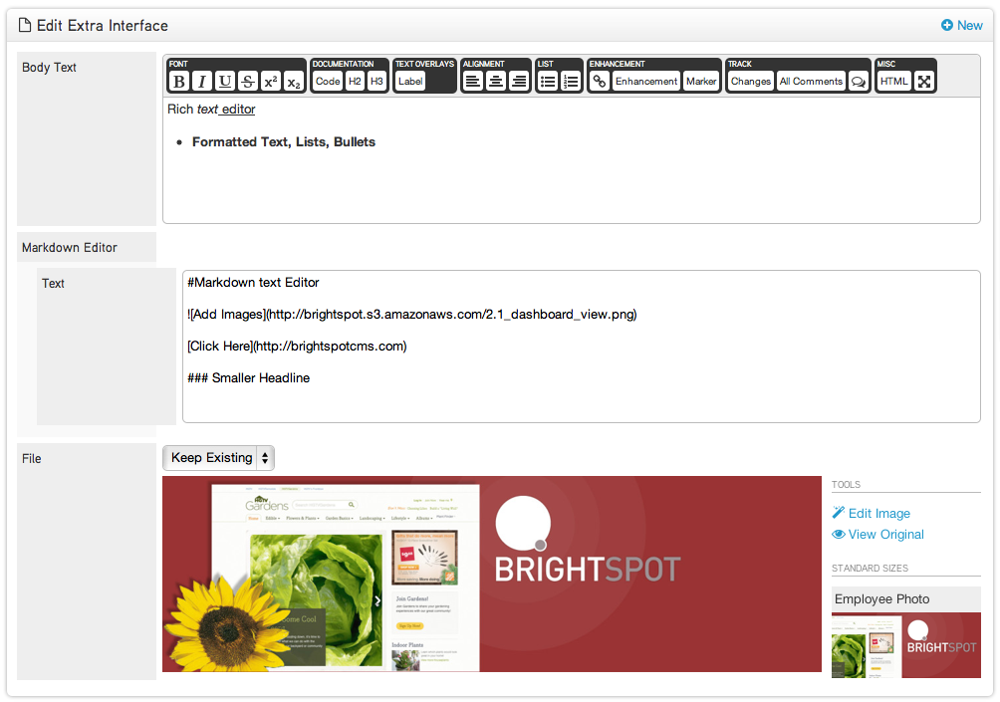
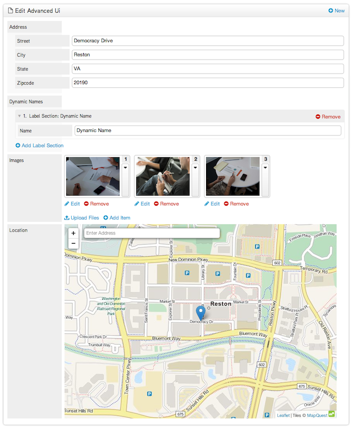
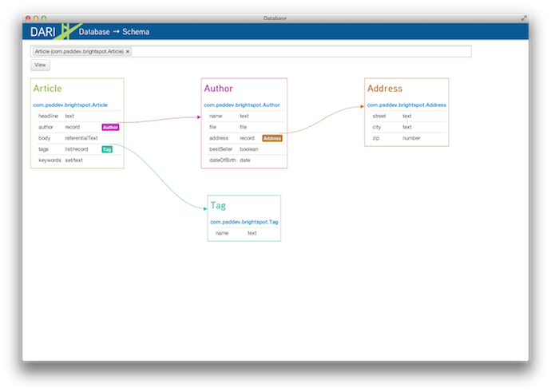

<div class="span12">

    <div class="container">
        <div class="row header">
            <div class="span12">
                <p>When using Brightspot, creating a new object automatically generates a user interface within the CMS, where editors can interact and publish. This guide will look at how to model your objects, and the corresponding UI that is created within the CMS.</br>

                <h2>Creating an object</h2>Having <a href="/installation.html">installed</a> Brightspot, you can start to create objects to appear within the CMS. To do so, create a Java class, and extend <code>Content</code>. Save your object within your project at <code>src/main/java/yourGroupID</code>. Once saved, refresh your CMS browser window and click into the <a target="_blank" href="/search.html">Search tool</a>. In the <code>Create</code> drop-down you should see your new object. Click <code>New</code> to open it within the content edit view. The name of your Java class will appear in the CMS as the name of the object. Below is an example Article object.</p>


<div class="highlight">{% highlight java %}package com.psddev.brightspot;

import com.psddev.cms.db.*;
import com.psddev.cms.tool.*;
import com.psddev.dari.db.*;
import com.psddev.dari.util.*;
import java.util.*;

public class Article extends Content {

    private String headline;
    private ReferentialText body;
    private List<Tag> tags;
    private Set<String> keywords;

    // Getters and Setters

}{% endhighlight %}</div>

<a name="ui"></a>
<p></br><h2>Adding Fields</h2>There are a range of standard UI elements that you can use. Start by adding some to your newly created object. Refresh the CMS to see the new UI appear. If you want to remove any element, just remove the code within your Java class. You can always reorder the UI by changing the order of the fields in your class. The name of your field will be reflected directly in the CMS as the UI label.</p>


            <div class="highlight center span12" style="padding-top: 10px;">
                <h2>Standard User Interface</h2>
                    Standard Java elements are converted into a Brightspot user interface, as the example below shows. Adding <code>String</code> provides a text field, and associating an object simply requires a reference to it, <code>private Author author;</code>. The example below shows other options available, all of them standard Java.</br>
            <div class="highlight-line left" style="top: 168px; width: 300px;">
            <div class="highlight-box">
                    <div class="title" style="width: 300px;">Text Field, Objects & Calendar Widget</div>
                    <div style="width:300px!important;" class="description">private String Headline;</br>private Author author;</br>private Date publishedDate;</br></div>
                </div>
            </div>
            <div class="highlight-line left" style="top: 285px; width: 300px;">
            <div class="highlight-box">
                    <div class="title" style="width: 300px;">Boolean, Enums & Lists/Sets</div>
                    <div style="width:300px!important;" class="description">private Boolean checkbox;</br>private enum choose;</br>private List&lt;Tag&gt; tags;</br>private Set&lt;String&gt; keywords;</br></div>
                </div>
            </div>                 
            
            <br/>
        </div>

            <div class="highlight center span12" style="padding-top: 10px;">
                <h2>Dari User Interface Objects</h2>
                There are two elements that are not standard Java types, the first, <code>ReferentialText</code>, provides a rich text editor interface, the second <code>StorageItem</code> allows a file, such as an image, to be uploaded/stored. Modeling of the Image object, and storage config is covered <a href="/storage-item.html" target="_blank"/>here</a>.</br></br>
            <div class="highlight-line left" style="top: 185px; width: 300px;">
            <div class="highlight-box">
                    <div class="title" style="width: 300px;">Rich Text Editor</div>
                    <div style="width:300px!important;" class="description">private ReferentialText body; creates a rich text editor interface with text formatting capabilities</div>
                </div>
            </div>
            <div class="highlight-line left" style="top: 305px; width: 300px;">
            <div class="highlight-box">
                    <div class="title" style="width: 300px;">Markdown Editor</div>
                    <div style="width:300px!important;" class="description">private Markdown markdownEditor provides a markdown text editor</div>
                </div>
            </div>
            <div class="highlight-line left" style="top: 455px; width: 300px;">
            <div class="highlight-box">
                    <div class="title" style="width: 300px;">File Upload</div>
                    <div style="width:300px!important;" class="description">private StorageItem file; generates a file upload ui element</div>
                </div>
            </div>              
            
            <br/>
        </div>

            <div class="highlight center span12" style="padding-top: 10px;">
                <h2>Advanced User Interface</h2>
                More advanced user interfaces can be built, with the help of annotations. Below are some examples, an embedded type, and a dynamic label field.</br>
            <div class="highlight-line left" style="top: 175px; width: 300px;">
            <div class="highlight-box">
                    <div class="title" style="width: 300px;">Embedded Objects</div>
                    <div style="width:300px!important;" class="description">You can embed another object using the <code>@Embedded</code> annotation at the field level.</div>
                </div>
            </div>
            <div class="highlight-line left" style="top: 315px; width: 300px;">
            <div class="highlight-box">
                    <div class="title" style="width: 300px;">Dynamic Field Label</div>
                    <div style="width:300px!important;" class="description">Using the annotation <code>@LabelFields("name")</code> the property private String name; can be used to create a label within the UI dynamically</div>
                </div>
            </div>
            <div class="highlight-line left" style="top: 445px; width: 300px;">
            <div class="highlight-box">
                    <div class="title" style="width: 300px;">List of Media Items</div>
                    <div style="width:300px!important;" class="description">A list of items containing a StorageItem, where <code>@PreviewField("file")</code> references the StorageItem field automatically creates a quick bulk upload user interface</div>
                </div>
            </div>
            <div class="highlight-line left" style="top: 620px; width: 300px;">
            <div class="highlight-box">
                    <div class="title" style="width: 300px;">Location</div>
                    <div style="width:300px!important;" class="description">Allow Latitude and Longitude to be set using the Dari Location type. Add <code>private Location location;</code> to your class.</div>
                </div>
            </div>                     
            
            <br/>
        </div>
<br><br><p><h2>Annotations</h2>As well as automatically generating the user interface, directly from the Java class, Brightspot provides annotations that can be used to control and assist user input and business logic. For a walk through of some of the most common annotations, see the starter guide <a href="/using-annotations.html.html">here</a>, or see the full list <a href="/annotations.html">here</a>.</p>

<p><h2>Associating Objects</h2>Once you have your first object created you can add a second. You can add a reference to an existing class, for example an Author that is associated with each Article. Associate an object by naming it as a return type in your Java class, <code>private Author author;</code>. </br></br>With objects created you can start to use annotations to control aspects of them. For example, every object within Brightspot has a LabelField, which is used to automatically create a label. As a default, the first text string field within an object is used. This label is used when returning search results within the CMS. </br></br>The Author object is a good example of when to override the default LabelField, to help label the object more clearly. The example Author object has two fields, <code>firstName</code> and <code>lastName</code>. When an Author shows up in search results you can only see the first name, as it is the first string text field. This can be fixed to show the two names, as the example below shows: </p>


<div class="highlight">{% highlight java %}@LabelFields({"firstName", "lastName"})
public class Author extends Content {

    @Indexed
    @Required
    private String firstName;
    @Required
    private String lastName;
    private StorageItem file;
    @Embedded
    private Address address;
    private Boolean bestSeller;
    private Date dateOfBirth;
  
}

{% endhighlight %}</div>


    </br><p><h2>Dari Schema Tool</h2>With several objects created you can leverage the Dari Schema Tool, which gives an instant view of your data model. Navigate to <a target="_blank" href="http://localhost:8080/_debug/db-schema">http://localhost:8080/_debug/db-schema</a> and select one of your objects. Below is a view of an example Article object, the associated objects, Tag and Author, and an embedded object, Address.</p>
    <div class="highlight center span12" style="padding-top: 10px;">
        <div class="highlight-line left" style="top: 75px; width: 170px;">
            <div class="highlight-box">
                    <div class="title">Find your object</div>
                    <div class="description">Start typing to find your objects, click to view</div>
            </div>
        </div>
            <div class="highlight-line right" style="top: 140px; width: 220px;">
            <div class="highlight-box">
                <div class="title">Edit in browser</div>
                <div class="description">When running locally, click into your object to edit the java class</div>
            </div>
</div>
    
    </div>
</div>

</div><!--/.container-->

